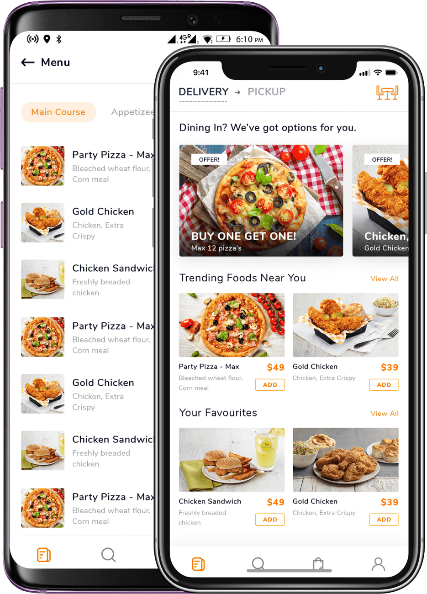
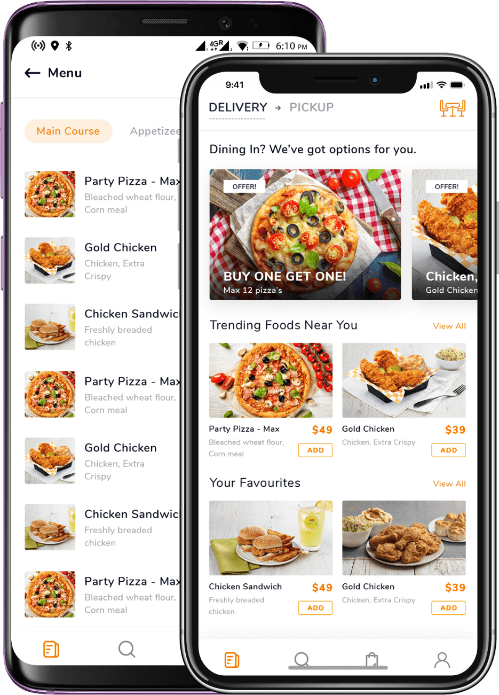

The super star project during my internship - a food order/ restaurant startup for diverse home cooked food.
As the creative and design lead I was tasked to optimize the UX and prepare material and procedural flows for the startup - supply chains, scripts and marketing.
Going beyond the basic design stages, this meant strategizing, banner, photo, video and logo production.
The main challenge was building a shared environment, a progressive web app for users, drivers, and home based cooks.
Learning about each main group involved revealing what's most important emotionally and motivationally for their own flow, what experience and insights they might bring to the context, what additional problems they bring as well. You can never know a narrative, an experience without familiarity to the participator emotions & motives!
To do that on a tight budget both local and international surveys & questionnaires were launched to explore business and user themes, assumptions, predispositions.
Competitive research to get the feel for gastronomic UX design, aesthetics and content styles.
Competitor review analysis to understand frequent user pain points associated with picking, ordering and getting food. I brought my own experience as a food delivery driver at that time and we invited some cooks who had signed up for exploratory interviews.
Finally, the entire interface required a redesign.
There was an existing web app to serve as the digital foundation for handling orders, dispatching drivers, and empowering users.
However it was outdated, inconsistent in style and many functions were missing. The user design style is similar to other ordering apps, with an emphasis on information and brand aesthetics. While the cook and driver side of the platform were centered on a more minimal, efficient and streamlined approach.
This is where the majority of design-dev
collaboration took place.
 
Dimamzo was the opportunity that stimulates growth beyond what normal ux designers are expected to do. I got heavily involved in the business strategy of the startup, the decision making was influenced by costs, optimal supply chains, certifications.
Synchronizing the design and aligning branding and marketing through production and collaboration was work but the final result was a buildable environment that, with consistency, could have a chance.
Facilitating engagement through Scarcity & Liking principles in the timer, and headline copys.
The upper nav is glassmorphism which helps to display the background images a bit more. Minimalist as possible without harming the branding or engagement efforts.
Footer and final CTA to the key group behind the supply chain - cooks.
Descriptive & explorative questions would provide great user group data early on (pre-launch). With data we can begin systemizing cook categories, find good cultural matches for the startup and begin offering actual value through the food real cooks offer.